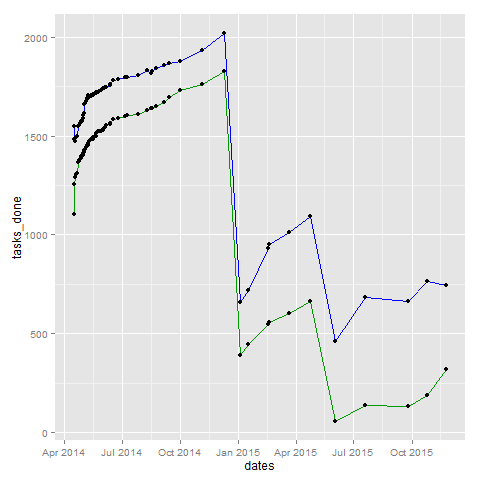

Things I'm learning
Table of Contents
- Questions
- Current curiosities - Nov 12, 2014 learning
- Jan 29, 2014 learning
- Learning update - Jan 3, 2014 learning
- Learning update May 9, 2013 learning
- Learning plans for 2013 - outdated
- Learning plans for 2012
- Plan
- [X] Relationships
- [X] Drawing: Learn by doing and by being inspired by other people
- [X] Writing: Learn by doing and reading
- [X] Business
- [X] Self-tracking / personal informatics: Learn with Quantified Awesome
- Tools: Learn by doing
- Delegation / elimination: Learn by doing
- Consulting / services
- Development
- Quick update 2012-04-01
- Time budget from 2011-12-14
- Plan
- Learning plans from 2010
Want to help me with anything on this list? Please feel free to contact me at sacha@sachachua.com . What can I help you learn? I'm sure I'll learn tons along the way, too!
You can find this document at http://sach.ac/my-learning
Questions
Help me figure things out! E-mail me with your thoughts and ideas.
- Emacs
- What are the best resources out there? How can we logically arrange them so that people can find the appropriate resources for their level?
- How can we make it easier and less intimidating for people to customize Emacs through Emacs Lisp?
- How can we inspire people to learn more?
- I'm recording Emacs Chats (to help people get to know Emacs), screencasts, and show-and-tells
- I blog about how I tweak Emacs
- How can we help people get a sense of other people in the community, and feel like they belong?
- I'm recording Emacs Chats (to help people get to know Emacs), screencasts, and show-and-tells
- I want to create something like "usesthis"
- What makes code beautiful or idiomatic Emacs Lisp?
- Coaching
- How can I connect with people who want to learn more about Emacs? How can I keep track of their progress and guide them along their path?
- Sharing
- I've shared a lot of stuff. How can I organize things so that they make sense to other people?
- How can I organize things so that I remember more effectively?
- How can I repurpose things to address different learning styles or needs?
- How can I garden more effectively with the setup that I have?
- Trying hand-watering, attention
- Will try bulk compost
- Delegation: What kinds of tasks can I ask others to do? How can I help people develop their skills?
- How can I get better at learning from other people?
- What do other people need or want that is easy for me to provide?
Current curiosities - Nov 12, 2014 learning
Web design and development
TODO Learn how to combine Jasmine and Angular
DONE Go through a QUnit tutorial
:Effort: 1:00
Completed http://www.smashingmagazine.com/2012/06/27/introduction-to-javascript-unit-testing/
DONE Go through a Jasmine tutorial
:Effort: 1:00
Converted the QUnit tutorial test code to Jasmine. Also added jasmine-jquery for easy fixtures.
describe("PrettyDate.format", function() {
function checkDate(name, then, expected) {
it(name, function() {
expect(prettyDate.format('2008/01/28 22:25:00Z', then)).toEqual(expected);
});
}
checkDate("should display recent times", '2008/01/28 22:24:30Z', 'just now');
checkDate("should display times within a minute", '2008/01/28 22:23:30Z', '1 minute ago');
checkDate("should display times within an hour", '2008/01/28 21:23:30Z', '1 hour ago');
checkDate("should display times within a day", '2008/01/27 22:23:30Z', 'Yesterday');
checkDate("should display times within two days", '2008/01/26 22:23:30Z', '2 days ago');
});
describe("PrettyDate.update", function() {
function domtest(name, now, first, second) {
it(name, function() {
loadFixtures('test_fixture.html');
var links = document.getElementById('qunit-fixture').getElementsByTagName('a');
expect(links[0].innerHTML).toEqual('January 28th, 2008');
expect(links[2].innerHTML).toEqual('January 27th, 2008');
prettyDate.update(now);
expect(links[0].innerHTML).toEqual(first);
expect(links[2].innerHTML).toEqual(second);
});
}
domtest("prettyDate.update", '2008-01-28T22:25:00Z', '2 hours ago', 'Yesterday');
domtest("prettyDate.update, one day later", '2008-01-29T22:25:00Z', 'Yesterday', '2 days ago');
});
DONE Write about beginner steps for testing
:Effort: 1:00
Japanese
See Learn Japanese
STARTED Find an easy way to look up Japanese when typing into Emacs
:Effort: 1:00
DONE Find an e-book for learning Japanese and put it on my laptop & tablet
DONE Find a Japanese plain past tense practice tool
:Effort: 0:30
:QUANTIFIED: Japanese
Reporting
DONE Find a Tableau e-book and put it on my laptop/tablet
Jan 29, 2014 learning
Working well without deadlines
DONE A-B-A test: Without, with, without deadlines
Learning from people
DONE Make a list of questions I'm curious about
:Effort: 0:30
DONE Ask questions in public
:Effort: 0:30
:QUANTIFIED: Business Learn
DONE Set up conversations
:Effort: 0:30
DONE Share notes/transcripts
Learn from historical figures
- Note-taking
- Leonardo da Vinci
- Michael Faraday http://www.academia.edu/442248/Faradays_Notebooks_the_Active_Organization_of_Creative_Science
- Diaries, idea books, loose slips, retrieval sheets, work sheets; paste-ups, indexes; amanuensis; common-place book
- Locke - real-time index
- Benjamin Franklin
- Improvement of the Mind (Isaac Watts)
Turning ideas and assumptions into experiments
TODO Tracking: Update the number of tasks lowenergy routine
:CREATED:
:Effort: 0:10
:LASTREPEAT:
:QUANTIFIED: Tracking
What do I eventually want? I want to be able to see how quickly I'm accumulating new tasks and checking off DONE tasks. It would be interesting to look at the proportion, too, but that can come later. So first, I want a table that looks like this:
Hmm, maybe I'll go ahead and calculate that first.
(defun sacha/org-count-tasks-by-status () (interactive) (let ((counts (make-hash-table :test 'equal)) (today (format-time-string "%Y-%m-%d" (current-time))) values output) (org-map-entries (lambda () (let* ((status (elt (org-heading-components) 2))) (when status (puthash status (1+ (or (gethash status counts) 0)) counts)))) nil 'agenda) (setq values (mapcar (lambda (x) (or (gethash x counts) 0)) '("DONE" "STARTED" "TODO" "WAITING" "DELEGATED" "CANCELLED" "SOMEDAY"))) (setq output (concat "| " today " | " (mapconcat 'number-to-string values " | ") " | " (number-to-string (apply '+ values)) " | " (number-to-string (round (/ (* 100.0 (car values)) (apply '+ values)))) "% |")) (if (called-interactively-p 'any) (insert output) output))) (sacha/org-count-tasks-by-status)
library(ggplot2) dates <- strptime(as.character(data$Date), "%Y-%m-%d") tasks_done <- as.numeric(data$DONE) tasks_uncancelled <- as.numeric(data$Total) - as.numeric(data$CANC.) df <- data.frame(dates, tasks_done, tasks_uncancelled) plot = ggplot(data=df, aes(x=dates, y=tasks_done)) + geom_line(color="#009900") + geom_point() + geom_line(aes(y=tasks_uncancelled), color="blue") + geom_point(aes(y=tasks_uncancelled)) print(plot)

library(ggplot2) dates <- strptime(as.character(data$Date), "%Y-%m-%d") tasks_remaining <- as.numeric(data$Total) - as.numeric(data$CANC.) - as.numeric(data$DONE) df <- data.frame(dates, tasks_remaining) plot = ggplot(data=df, aes(x=dates, y=tasks_remaining, ymin=0)) + geom_line(color="#009900") + geom_point() print(plot)
DONE Track cat data @home routine
Spreadsheet http://192.168.1.11/webcam
(progn (browse-url "https://docs.google.com/a/sachachua.com/spreadsheet/ccc?key=0AsLpkeSVIjRYdE40bU13V3I5YV9XMlA3bW5XaVB4Tmc&usp=drive_web#gid=0") (browse-url-firefox "http://192.168.1.11/webcam"))
:STYLE: habit
:QUANTIFIED: Track
:Effort: 0:30
:LOGGING: lognoterepeat
:LASTREPEAT:
:Attachments: 2014-04-27%20171653-Microsoft%20Excel%20-%20Litterbox%20Data.xlsx.png
:ID: 8cbad18f-d84a-4351-b3f1-933ce5666f8e
Self-directed learning
DONE Use the structured debriefing framework for one occasion, then reflect on it
:Effort: 1:00
:QUANTIFIED: Writing
Delegation
Work up to delegating 30 hours of work a week
- DONE Consider encouraging current assistants vs adding more assistants
:Effort: 0:15
- Sticking with current team
- Decent skills
- Need more pushing, perhaps, since I'm too nice and I allow people to pick instead of assigning tasks? Try getting the hang of assigning tasks first.
- Adding more people
- Could possibly run into task starvation
- But more skills! Coding? Emacs Lisp?
- Learn how to manage the assistants I have first, before greedily adding more.
- Sticking with current team
- DONE Add more tasks to delegation board in Trello
:Effort: 0:30
- DONE Examine unscheduled tasks for things that can be delegated
:Effort: 0:30
Nothing! Really? Weird…
CANCELLED Document three processes each week
:LASTREPEAT:
:Effort: 2:00
http://www.chrisducker.com/101-tasks-to-outsource-to-virtual-staff/
- Update QuantifiedSelf.ca blog posts with video embeds
- Request books from the library
- How to add tags to Flickr sketches
Exercise
DONE Borrow yoga DVD and try half an hour every other day
CANCELLED Sign up for a class series (8 weeks?)
Cooking
DONE Try two spice combinations
Learning update - Jan 3, 2014 learning
Learning (T)
DONE Planning: Figuring out good questions to explore and resources/experiments for those questions
- DONE If I focus on just-in-time learning (instead of scheduled courses or recurring membership), then I will use the momentum to directly apply the lessons and I won't feel guilty about unused resources
- DONE If I name the things I'm learning about and map them to categories, then I can look up my notes and visualize the accumulation
- DONE If I track experiments in Org Mode, then good ideas won't slip through the cracks and I will be deliberately observing effects and making progress month
Duration: 1 month Previous state: Flickr Conclusion: GOOD.
SOMEDAY Learning from people
- Triggered experiment: When i have an idea or I could use some help, then I should ask my social networks, and maybe others will get involved
CANCELLED Finding and filling gaps
To share
- Visual thinking
- Note-taking
- Reading
- Experimenting
Sharing (W)
DONE Collecting questions and sharing answers/tips
SOMEDAY Organizing and collating
SOMEDAY Finding and filling gaps
DONE Podcasting, video
DONE Hangouts
DONE Helpouts
SOMEDAY Personal updates (see Connecting)
To share
- Blogging
- Drawing
- Google Helpouts
- Social networks
Drawing and visual thinking (Th)
DONE Using colour for emphasis, structure, and visual variety
- DONE If I draw with blue and black as my default workflow, then I can add shading with a light blue or light yellow highlight to add more depth and interest to my sketches
- 2014-01-11: Pretty all right. Will continue.
- Previous: Drew with red and black; used to draw with blue and black, but decided not to because I didn't have the pens handy. Will change to always carrying the pens in my belt bag.
- If false: Blue is hard to see at a glance, and switching and colouring are less fun. SCHEDULED:
- DONE If I draw with red and black, then my sketchnotes will be more visually structured while still keeping post-processing simple
- Previous: All black or all blue; sometimes computer-coloured
- If false: Thumbnails are still difficult to distinguish; feeling vs all-black sketches; feeling vs blue-and-black sketches like
Blue Flickr Blog Red Flickr Blog - : If I use red, I usually have to colour-correct it in Autodesk Sketchbook Pro so that it doesn't look pink. I haven't figured out how to automate this yet, since Autodesk Sketchbook Pro neatly allows me to avoid correcting grayscale items. Per image, it's a few clicks and a drag. Leaning towards blue again. Red is more fun, though.
Evaluated over three days:
- DONE If I spend at least one day a week drawing on my computer, then I will improve my workflow and get a better sense of my needs
DONE Figures, hands, faces :low-energy:
SOMEDAY Depth :low-energy:
DONE Visual vocabulary :low-energy:
DONE Metaphors :low-energy:
To share
- Workflow
- Thinking
- Models
Living (F)
DONE Establishing a winter exercise routine
DONE House
- DONE If we let Leia out in the basement on non-litterbox-accident days, then the number of accidents will be less than three times a month quarter
Started (three-day isolation protocol whenever she has tummy problems)
Previous: Bathroom almost all day except when we're there to monitor
- DONE If we don't turn on special heating downstairs, the cats will still be fine month
If false: The cats are shivering or they catch cold
- DONE If I establish a weekly routine with daily vacuuming, then I will clean more regularly week
- If false: I drop the schedule after a week
- Previous: Occasional weekend cleaning
Yeaaaah… right.
- DONE If I embrace research and comparison shopping as an opportunity to geek out more, then I will feel less overwhelmed and more edified
- 2013-01-06: Vacuum
- DONE If I spend time maintaining the things I like, then I can make them last longer than I expected
- 2013-01-06: Boots
- If I invest in amending the soil and I stop trying to balance the cost (treat it like a hobby instead of as grocery-replacement), then I'll enjoy growing basil, tomatoes, and bitter melon
DONE Minimalism, quality
DONE More recipes
Stoicism
- DONE Track negative feelings
http://sachachua.com/blog/2014/01/simplifying-with-stoicism-examining-negative-feelings/
Went for a two-hour walk in the snow. Was fine. Paper cut. No problem. Worked with Java. Not frustrated. Anxious about potential side-effects. - DONE Identify attachments
- DONE Identify what I can control
- DONE Practise negative visualization
To share
- Frugality, personal finance
- Relationships
- Biking
- Cooking
Business
DONE Creating collections and courses
DONE Delegation
- DONE If I identify a large list of tasks to outsource AND I set aside time to train and document, then I will benefit from having the tasks regularly taken care of, and this will be more reassuring than stressful
- Hypothesis: I can manage 30 hours of useful delegated work each week
Duplicate of Work up to delegating 30 hours of work a week
SOMEDAY Partnering
To share
- Paperwork
- Consulting
Connecting
DONE Learning more about people online, and sharing more of myself
DONE Asking for help
DONE Games
SOMEDAY Social updates (personal stories, etc.)
SOMEDAY Conferences
DONE Hacklab
To share
- Meetups
- Helping
Emacs (M)
DONE Drawing and writing things to help people learn basic and intermediate topics
Under "Explaining Emacs, helping people learn"
DONE Org improvements
DONE Emacs/package contributions
To share
- Configuration
- Customization
- Emacs Lisp
- Org, Babel
Learning update May 9, 2013 learning
Every so often, I make a list of things I would like to learn or work on. Not only does thinking about what I want to learn help me decide how to spend my time, it also makes it easier for me to ask for help. I don't refer to the previous lists while making a new one, because the differences between the lists gives me valuable information. If my new list is missing some things that were on my previous list, that tells me that my priorities and interests have changed. I can decide whether I want to go back to those old priorities, or if it's okay to shelve those ideas for later.
Here's my current list:
Business
- Consulting for E1: Plugin development might be an excellent new skill to add so that I can hit even more home runs when it comes to client requests
- Tech skills: This is too good an advantage to waste, and I enjoy it.
- Automation/productivity hacking: More text, data, and image processing! More macros and shortcuts and application scripting!
- System administration: It's good to have a solid platform and a streamlined development process. I want to learn more about managing multiple sites, setting up reliable backup and restore systems, automating deployment, and keeping up with security updates.
- Web development: It's so nice to be able to quickly build my own systems. I want to get better at writing neat, solid code that follows best practices so that I can rely on tests to keep me from breaking things that I infrequently modify.
- Web design: I really like using HTML5 and Javascript for data visualization, and I want to get even better at doing that.
- Other geekery: 3D printing, electronics, sensors, speech recognition, scripting there's so much to play with. =)
- Writing: It's a fantastic way to learn.
- Collecting and organizing my blog posts, then filling in the gaps: Right now, people discover lots of my posts through search engines, and I write new things based on what I'm learning or what other people ask me about. I want to get better at making an outline and filling it in so that I can guide more people along their journeys.
- Exploring more visual formats: This takes more work up front, but it can be more enjoyable and more accessible for people. Someday it would be great to be comfortable making comic books and illustrated guides!
- Drawing: It's becoming more and more fun, and people find it useful too.
- Drawing people and situations: It would be fun to learn how to draw manga characters well, because that will give me anchors for my imagination.
- Animated sequences: Wouldn't it be nifty to be able to put together short explanations and tutorials that help people learn useful things?
Relationships
- Cooking: I want to try lots of recipes so that we can enjoy a variety of yummy and healthy meals at home.
- Gardening: I'd like to learn how to work with the seasons and the soil for a productive and happy garden.
- Enjoying time with and helping family and friends
Life
- Languages: I'd like to be comfortable enough with Japanese that I can read manga, watch anim, listen to tech podcasts or read articles, and go to technical conferences. Super-awesome level would be to sketchnote something in Japanese that would be a challenge! I also want to be able to chat with W-, neighbours, and shopkeepers in Cantonese. (And let's throw Latin in there for quirky fun)
- Exercise: Learning good exercise habits will have lifelong benefits.
- Learning: I could get even better at learning by building habits around spaced-repetition study and practical application. I could expand my range by learning how to learn from online courses. I could get deeper into learning from books, blog posts, conversations, and experiences. I could get better at reviewing, consolidating, and sharing what I'm learning.
- Making decisions: Quantified Self, tracking, applied rationality, all sorts of other good things
- Sewing: Useful skill, and might be a way for me to work around clothes shopping. =)
Thoughts
Compared to my list from January, it looks like traditional sales, marketing, and entrepreneurship skills aren't as large a part of my list at the moment. Delegation is lower too because I'm less interested in scaling up beyond myself (at the moment) and more interested in making the most of my flexibility. I haven't dug into Android development, so I can probably shelve that for now. Connecting is still somewhat interesting, though.
Now, how do I want to learn?
I like the idea of working on personal projects, and possibly applying the skills commercially if people get inspired. Being able to follow my interests is one of the advantages of this semi-retirement, so I should make the most of that. Maybe that looks like this: Hmm, that seems like an interesting idea <clackety-clack> Let's see if we can build a quick prototype Here it is, and here's a blog post about what I'm learning along the way!
I'm not very good at asking for help. I'm too comfortable with my limits. I might learn something more slowly, or not as effectively as I could with other people's help, but that's okay. If I rely only on myself, though, I think I'd miss out on all the interesting opportunities that happen when you learn together with other people. I'm not entirely clear on what that might look like. I imagine that it would be along the lines of, Hey, check out this thing I just learned! Oooh, that's serendipitously close to what I've been learning check this out! That's super-helpful. What did you think about this other thing? Which is actually what I have through this blog, so I guess it works out after all. Onward with the blog posts, then.
I also tend to feel a little scattered, mostly because I work and write in short chunks (~2-4 hours of learning). The blog's chronological format obscures the growth in various areas over time, unless you look at a category view and that's not really a map, either. I've been maintaining a topical index to make it easier to see blog posts, but it might be interesting to mindmap the key things I want to know, look at what I already know, and identify the specific small gaps I want to address first.
Mm. That might work. If I map out the questions, I can pick from this grab-bag of curiosities. Who knows where that might lead? So much good stuff out there!
Learning plans for 2013 - outdated
(January 2013)
See also: Imagining the next five years and planning 2013
Blogging rhythm:
- Monday: Emacs / Wordpress
- Tuesday: Decision review / Quantified Self
- Wednesday: Sketchnote of book or presentation
- Thursday: Business experience report
- Friday: Reflection / planning
- Saturday: Weekly review
- Sunday: Personal story
What do I want to learn about and write about this year?
Work
Entrepreneurship
- DONE Defining the problem
- DONE Validating ideas
- DONE Planning my next mini-experiments
- CANCELLED Experimenting with microstock illustrations
- DONE Decision review: Starting my own business
- DONE Learning about business
- DONOE What I've learned about service businesses
- DONE Learning about product businesses
- CANCELLED Amazon affiliate update
- DONE Business and my personal learning network
Sales
- DONE How to not be overwhelmed by opportunities and to-dos
- target: one conference
- CANCELLED Writing sales letters
- DONE Reaching out for that initial conversation
- DONE Following up on conversations
- DONE Closing the sale
- DONE Refining my message
- DONE Sketchnoting my sales letter
- DONE Experience report: Connecting with agencies
- DONE Experience report: Connecting with organizers
Marketing
Skills
- Summarizing is hard
- Learning how to summarize
- newspaper game
- DONE What's new in Rails
:Effort: 2:00
:QUANTIFIED: 0:30
- DONE Adding tests to Quantified Awesome
:Effort: 4:00
- DONE How to draw abstract concepts
- DONE Developing a colour scheme
- DONE How to listen and draw at the same time
- DONE Sketchnote compilation
- DONE Organizing sketchnotes
- DONE Animation workflow
- DONE Learning plan: Sketchnotes
- DONE Revising my sketchnotes
- DONE Planning how to learn: Whiteboard animations
- DONE Getting the hang of drawing sketchnotes
Reading
- Metaphor and Emotion :opportunity-fund:
http://www.amazon.com/Metaphor-Emotion-Language-Interaction-ebook/dp/B000SEUPH6/ref=sr_1_1_bnp_1_kin?ie=UTF8&qid=1372988059&sr=8-1&keywords=metaphor+and+emotion $7.95 rent for a month $17.60 Kindle $36.87 Paperback
- TODO Request books from the library focusing on one of the topics
- DONE Planning my business reading list
- DONE Reviewing my book notes
Delegation
- DONE How I hire people on oDesk
- DONE Learning from how other people delegate
- DONE Imagining wild success: delegation
- DONE Delegating scheduling to a virtual assistant
- DONE Using Trello to visually track delegated tasks
- DONE Planning ahead in terms of people
- DONE Writing down your processes
- DONE Evaluating assistants
Connecting
- CANCELLED Get a rich e-mail summary of your agenda
- DONE Personal contact relationship management
- DONE Helping people get started
- DONE Making the most of meetups
- DONE The shy connector: choosing your events
- DONE The shy connector: taking notes
- DONE The shy connector: following up
- DONE Getting better at following up
- DONE Working on being more social
- DONE My meetup workflow
- DONE Spending on people
Others
- 52 visual book reviews
30 items - 57% 1. 2012-02-29 Book - 6 Secrets to Startup Success - John Bradberry.png 2. 2012-03-04 Book - The Start-up of You - Reid Hoffman, Ben Casnocha.png 3. 2012-03-06 Book - How to Read a Book - Mortimer J. Adler, Charles van Doren.png 4. 2012-03-19 Book - Critical Inquiry - Michael Boylan.png 5. 2012-03-19 Book - Getting to Yes - Roger Fisher, William Ury, Bruce Patton.png 6. 2012-03-21 Book - Enough - Patrick Rhone.png 7. 2012-03-21 Book - Thank You for Arguing - Jay Heinrichs.png 8. 2012-05-09 Book - 100-dollar Startup - Chris Guillebeau.png 9. 2012-09-04 Book - Help Your Kids Get Better Grades - Gary E.png 10. 2012-12-04 Book - Visual Problem-solving - Dan Roam.png 11. 2012-12-11 Book - Best Practices Are Stupid - Stephen M. Shapiro.png 12. 2012-12-11 Book - The Sketchnote Handbook - Mike Rohde.png 13. 2012-12-28 Book - Blue Ocean Strategy - W Chan Kim, Renee Mauborgne.png 14. 2012-12-28 Book - Running Lean - Ash Maurya.png 15. 2012-12-29 Book - The Art of Pricing - Rafi Mohammed.png 16. 2012-12-30 Book - Cool Time - A Hands-on Plan for Managing Work and Balancing Time - Steve Prentice.png 17. 2013-05-01 Book - Red Thread Thinking - Debra Kaye, Karen Kelly.png 18. 2013-06-28 Book - Leading Out Loud - Terry Pearce.png 19. 2013-07-05 Book - The First 20 Hours - How to Learn Anything.png 20. 2014-01-28 Book - Decode and Conquer - Lewis Lin.png 21. 2014-03-26 Book - Conscious Millionaire - JV Crum III.png 22. 2014-04-16 Book - Mastery - Robert Greene.png 23. 2014-12-01 Sketched Book - The Inner Game of Work - W Timothy Gallwey.png 24. 2014-12-10 Sketched Book - The Stoic Art of Living - Inner Resilience and Outer Results - Tom Morris.png 25. 2014-12-12 Sketched Book - Just Fucking Ship - Amy Hoy and Alex Hillman.png 26. 2014-12-13 Sketched Book - Start With Why - Simon Sinek.png 27. 2014-12-14 Sketched Book - Write Faster Write Better - David A Fryxell.png 28. 2014-12-25 Sketched Book - Take Charge of Your Talent - Three Keys to Thriving in Your Career, Organization, and Life - Don Maruska and Jay Perry.png 29. 2014-12-31 Sketched Book - The Checklist Manifesto - How to Get Things Right - Atul Gawande.png 30. 2015-01-03 Sketched Book - So Good They Can't Ignore You - Why Skills Trump Passion in the Quest for Work You Love - Cal Newport.png
(let ((count 0) (files (directory-files directory nil pattern))) (format "%d items - %d%%\n%s" (length files) (/ (* 100.0 (length files)) target) (mapconcat (lambda (x) (setq count (1+ count)) (format "%d. %s" count (replace-regexp-in-string strip "" x))) files "\n")))
- CANCELLED 365 presentations
- DONE Experience report: 1-year anniversary
- DONE Figuring out what to spend on
- DONE On job titles
- DONE Improving my bike ride
- DONE Combinations of skills
- CANCELLED Planning a presentation 20 seconds at a time
- DONE Planning for emergencies
- DONE Decision review: Tablet PC
- DONE Developing more flexible skills
- CANCELLED Looking forward to tablet development
Relationships
Spending time together
Learning new skills
Life
Emacs
Wordpress and web development
Personal finance
Planning
Quantified
Writing
Other
- DONE Remembering to make time for yourself
- CANCELLED Decision review: Shed
- DONE Getting started with weekly reviews
- CANCELLED Decision review: mobile phone decisions
- CANCELLED Decision review: Asus Infinity TF700
- DONE Make better decisions with emotions
- DONE Without the excuse of time
- CANCELLED List: Ways I use my tablet
- SOMEDAY Learning R
- SOMEDAY APIdventures: Google Mail
- SOMEDAY APIdventures: Meetup
- SOMEDAY APIdventures: Twitter
- SOMEDAY APIdventures: Evernote
- SOMEDAY Learning plan: Android
- DONE How I read
- SOMEDAY Meditations in everyday moments
- SOMEDAY Looking for patterns
- SOMEDAY Relaxing
Learning plans for 2012
:Post Date:
:Post ID: 23066
:ID: o2b:505f9007-6167-451a-96e9-b85d56d98d24
Plan
[X] Relationships
Not estimated because this is part of social time
- [X] Planning and decision-making: Learn by making decisions
- ☑ Decided to start business after checking with family
- ☑ Sort out upcoming plans
- [X] Cultivating relationships with family: Learn by reaching out
- ☑ Establish regular habit of chatting with my mom over Skype
- [X] Cultivating connections online: Learn by reaching out
- ☑ Find role models online
- ☑ Build a cohort online
- [X] Making time for friends: Learn by reaching out
- [X] Local tech events: Learn by finding out about events and attending them
- [X] Shared interests
[X] Drawing: Learn by doing and by being inspired by other people
[X] Writing: Learn by doing and reading
- [X] Writing about life and things I'm learning
- Goal: Write notes and pointers to memories so that I can remember and share stories
- Current: 0.9 hours a day
- Estimate: 80 hours, part of discretionary buffer time as well
[/]Writing family stories- Goal: Help capture and share some of our family stories
- Estimate: 40 hours
[/]Organizing stories- Goal: Build a system for collaboratively working on and organizing stories
- Estimate: 40 hours
- [X] Organizing notes
- Goal: Make it easy for me (and possibly other people) to browse my notes by topic or explore a knowledge map
- Estimate: 40 hours
- [X] Putting together an e-book that will be useful to at least one other person
- Goal: Learn how to package information so that I can scale up
- Estimate: 80 hours
[X] Business
[X] Self-tracking / personal informatics: Learn with Quantified Awesome
- [X] Goal tracking
- Goal: Visual way to keep track of how much I work each week, how much I sleep, how much time I spend on focused learning, etc.; also, customizable questions to help me change my behaviour
- Estimate: 16 hours
Built this into dashboard, yay!
- [X] Visualization
- [X] Time
- Goal: Overall view of how I spent my time in a month or in a year, so that I can shift my time patterns
- Estimate: 16 hours
- [X] Goals
- State "DONE" from ""
:Modified: 1326470907
- Goal: See goal tracking
- Estimate: 16 hours
- [X] Use - tried it with groceries
- Goal: Identify things worth spending money or time on based on past use and satisfaction
- Estimate: 16 hours
- [X] Time
[/]Behavioural change- Goal: Get better and better at life by structuring each month as an experiment
- Estimate: 48 hours
[/]Applying automated testing to life- Goal: Stop more things from falling through the cracks by developing automated tests (ex: checking balances, etc.)
- Estimate: 16 hours
[/]Accommodating other people's patterns- Goal: Build systems that other people can use so that I can help them and so that I can learn from how they live
- Estimate: 80 hours
- SOMEDAY HTML5 development - changed from Android development
- Goal: custom app for tracking and reporting, so that I can keep an eye on my goals and collect/analyze more data
- Estimate: 80 hours
Tools: Learn by doing
- [X] Take advantage of improvements in Emacs and Org-mode
- Goal: Make the most of the tools I use
- Estimate: 16 hours
- [X] Learn how to make the most of Org-mode outlines - maybe use this for knowledge representation?
- Goal: Get to know Emacs Org Mode thoroughly so that I can use it to organize and publish what I know
- Estimate: 8 hours
- [X] Other tools that can take advantage of extra CPU and memory
- Goal: Find apps or packages that can help me work even more effectively
- Estimate: 26 hours
Speech recognition
- [X] Org and synchronization between multiple computers
- Goal: Get this sorted out so that I don't accidentally lose any information
- Estimate: 4 hours
- [X] [#C] Web service integration
- Goal: Interact with Quantified Awesome from Emacs so that I can meld Org and QA
- Estimate: 16 hours
Delegation / elimination: Learn by doing
Lowered priority on this to make space for other interests; may still look into delegating, but am okay with taking longer to accomplish my plans (maturation is handy!)
Consulting / services
Not estimated because this is part of work
Development
- Front-end and web design
- 2012-04-01: Still on the list, but lowered the priority
- [-] More JQuery + AJAX for richer interactions?: Learn with work projects
Not estimated because this is part of work
- [X] CSS and frameworks: Learn with work projects
Not estimated because this is part of work
- Project C: Sass, Compass, CSS3 (January 2012)
- [X] Basic information architecture: Learn with Quantified Awesome
- Goal: Figure out a mobile and web interface that fits the way I (and maybe other people) live
- Estimate: 40 hours
- Launching
- [X] Testing ideas: Learn with Quantified Awesome
- Goal: Test ideas and see which ones might be useful to people; build networks
- Estimate: 40 hours
- 2012-04-01: Some people using it already
- [X] Launching with minimal or no defects: Learn with work projects
- 2012-04-01: No further progress specifically planned for this year; focusing on non-development projects
- [X] Launching personal projects: Learn with Quantified Awesome
- Goal: Make life better for at least one other person
- Estimate: 80 hours
- 2012-04-01: Some people using it already
- [X] Testing ideas: Learn with Quantified Awesome
- [P] Projects
- 2012-04-01: Demoted to focus on drawing, writing, and consulting
- DONE Testing
- 2012-04-01: No further progress specifically planned for this year
- [X] 100% test coverage
- Goal: Get used to building more slowly and reliably
- Estimate: 40 hours; rest included in development
- [X] Selenium and other front-end tests
- Learned how to write Selenium IDE and Selenium RC tests
- [X] Behaviour-driven development: Learn with work projects, Quantified Awesome
- Goal: Learn how to express behaviour clearly and concisely so that I can specify my own apps
- [P] Rails: Learn with Quantified Awesome
- 2012-04-01: Demoted Rails development in order to focus on drawing and writing
- Previous goal: I want to learn more about Rails because I want to get better at building systems to support the way I want to live, and because I enjoy using it.
- [-] Rails 3.1: I want to take advantage of new features while building Quantified Awesome
- Goal: Use Quantified Awesome to answer my questions about how I spend my time, what I use, and how I want to grow
- Estimate: 80 hours
- [-] Mongo and other data stores
- Goal: Work with data that does not easily fit SQL data models
- Estimate: 20 hours
- [-] APIs: I want to integrate my web apps with lots of other tools, and allow for integration
- Goal: Add a native Android app and an Emacs interface; possibly integrate Twitter, my blog, and other websites for more data / questions
- Estimate: 80 hours
- [-] Performance tuning: I want to make sure my systems can handle the requests I want it to.
Not estimated because this is part of work
- [-] Security testing: I want to be more confident in the applications I build.
Not estimated because this is part of work
- CANCELLED Drupal
- 2012-04-01: Demoted Drupal development in order to focus on drawing and writing
- CANCELLED Android development
- DONE Set up my development environment again
- State "DONE" from "TODO"
:Modified: 1324079663
- DONE Get Quantified Awesome to show up on my Android
- State "DONE" from "TODO"
:Modified: 1324079665
- DONE Accept a file from Tap Log Records
- State "DONE" from "TODO"
:Modified: 1324085675
<intent-filter> <action android:name="android.intent.action.SEND" /> <category android:name="android.intent.category.DEFAULT" /> <data android:mimeType="*/*" /> </intent-filter>
- DONE Display a value from the file from Tap Log Records
- State "DONE" from "TODO"
:Modified: 1326470850
- DONE Display the total work time
- State "DONE" from "TODO"
:Modified: 1326470857
- DONE Display the total work time this week
- State "DONE" from "TODO"
:Modified: 1326470858
- DONE Display yesterday's statistics for sleep and discretionary time
- State "DONE" from "TODO"
:Modified: 1326470859
- DONE Build simple text input
- State "DONE" from "TODO"
:Modified: 1326470864
- DONE Set up my development environment again
Quick update 2012-04-01
Going into business myself means major changes to my time budget and learning plan! =) Will continue to refine this as I go along.
Time budget from 2011-12-14
Nudged by @catehstn's recommendation of my blog to @Tending2Entropy as an example of goal planning in personal life, I updated my learning plan with the things I'm planning to learn next year.
It was easy to come up with a quick outline. There are so many interesting things I want to learn. The tough part, however, was thinking about what I might actually get to do.
What does my cognitive surplus look like? I wanted to get a sense of how much discretionary time I actually had on a regular basis. I have about 20 weeks of data since I resumed time-tracking near the end of July. So that my numbers wouldn't be thrown off by the vacation we took, I focused on the last eight weeks (graph: 2011-10-16 to 2011-12-11).
Over the eight-week period, I got an average of 3.5 hours of discretionary time per weekday and 7 hours of discretionary time per weekend day. I can simplify that to an average of 4.5 hours per day, which comes out to 1642 hours for 2012 (not including vacations, which include more discretionary time).
Around 40% of discretionary time was used for social activities. Let's say that another 30% is a buffer for breaks and other things that come up, leaving 30% for focused learning. That gives me a time budget of around 500 hours. I want to do more than 1,000. Hmm.
Prioritization is important. I can focus on the things I want the most, then see how the rest of the year shakes out. Plans will change anyway, and estimates are flexible. My first few priorities for personal learning:
- Android development, so that I can save time syncing and get more of the data I want
- Goal tracking (handy for keeping the rest of my time in line)
- Behavioural change (trying small experiments)
Another way to deal with the gap is to shift more time. Over those eight weeks, tidying took about 0.7 hours / day, and cooking took about that much time too. Let's say half of future tidying and all of future cooking is outsourceable at $20/hour. That's an additional 384 hours for a trade-off of $7,680 after tax, which is a large chunk of money. I'd rather save the money and let it compound for later use, especially if I time chores so that they take advantage of low energy. Besides, cooking and other chores are partly social time too.
I can shift time in other ways. For example, I can use commuting time to learn more about Emacs, Org, and Rails, so that will help too. I can also use walking time to record life stories if I can figure out a workflow for dealing with audio or short notes.
Good to know what the size of the box is, and how much I want to pack into it! Let's see how it all works out…
Learning plans from 2010
What do I want to learn? There's a lot more than this, but it's a good starting map! I'll fill this out with notes along the way.
- Work
- Helping clients succeed and be happy
- Why this matters: Our clients work on amazing things, and IBM has many talents and resoures. If IBM and I can support clients in making the kind of difference they want to make, we can all make the world better.
- Ideal: I help clients envision the possible, troubleshoot problems, navigate IBM's capabilities, and work with IBM on making things happen.
- Strengths I can build on
- I'm great at connecting people, tools, and resources across the organization. This is something many clients and many IBMers have a hard time with. If I build on this strength, I can help more people learn how to do this well.
- I'm also good at understanding the big picture and communicating it to other people. I can empathize with clients' objectives and communicate that big picture with people in IBM.
- How I can grow
- Find role models and mentors who exemplify this for clients or industries
- Move from development or consulting into a client account supporting role
- Map out my network and strategies for connecting
- Notes
- I want to work cross-brand instead of focusing on a particular brand
- I would like to either focus on a specific client or a specific industry
- I particularly like the public sector because of how they collaborate, but I'm happy to explore other industries as well
- Connecting the dots
- Why this matters: Being able to connect people with other people, tools, and resources not only saves a lot of time and effort, but it also starts all these great collaborations. People get inspired when they find out about other people working on similar things, and together, they build something better than they could make on their own.
- Ideal: Not only am I a go-to person when people need to find other people or things, but I've pushed my knowledge into the network and helped build communities so that other people can find people, tools, and resources without relying on connectors like me.
- Strengths I can build on: I can remember what or who to look for when the need arises. I love keeping track of a diverse network of people, and lots of people tell me about interesting things that are going on. I can forward requests to the right community or to connectors who have wide networks as well. I take notes and help publicize other people's work, helping them become even more findable. Even though I've only been working at IBM for two years, people often ask me for help in finding people or resources. Imagine what this will be like when I've got more experience!
- How I can grow
- Organize my feeds so that I can keep track of more information
- Document and share more of my network knowledge
- Help people learn how to do what I do
- Map the organization
- Contributing to Smarter Cities and a smarter planet
- Why this matters: I believe in what we're doing at IBM and our ability to really help transform the way the world works. Our vision around Smarter Cities (and a smarter planet, in general) can touch many, many people's lives.
- Ideal: I help organizations and jurisdictions around the world learn more about Smarter Cities and a smarter planet. I can refer them to relevant examples and success stories. I help people envision the future, develop roadmaps, and implement initiatives.
- Strengths I can build on: Although I don't have a deep knowledge of this area yet, I do have many mentors and colleagues who are working on this, and I can learn from them and from the knowledgebases they're building. I'm also passionate about what we're all working towards.
- How I can grow
- Review all the Smarter Cities material that's out there
- Shadow or participate in engagements
- Bring together and summarize external examples
- Learn from other IBMers as they work on engagements
- Sharing what I'm learning and organizing the information so that people can learn more effectively
- Why this matters: It's amazing how much sharing can save people time, inspire people, and start great conversations. People really value the notes that I've shared through blog posts and presentations. I want to get even better at documenting, sharing, and organizing what I know, so that other people can build even better things on that foundation.
- Ideal: Every day, I share as much as I can of what I've learned. In addition to chronological updates, people can explore what I'm sharing through an organized map that makes it easy to see the big picture. I am clear, concise, and coherent. I package knowledge in different forms to fit different needs: blog posts, wikis, presentations, videos, books. I inspire other people to share, too, and I help them learn how to do so effectively.
- Strengths I can build on: Blogging has helped me learn how to write freely and quickly. I'm comfortable with giving energetic and engaging presentations, and I'm also good at preparing stand-alone presentations and videos. I'm comfortable building wikis. I'm good at searching my archives to find things I've already written. I love learning from people, books, and other sources. I make time to share what I know, and I have plenty of success stories that reinforce the value of that investment.
- How I can grow
- Map what I know and map what I want to learn, then organize my notes accordingly.
- Read and learn from blogs and books by other people who are focused on sharing.
- Edit and organize excerpts from my archive into a more coherent form, such as an e-book.
- Explore a random information management system (like a "morgue file") to capture snippets of information for later processing.
- Coach people on how to share and organize what they know.
- Facilitating visions, discussions, and decisions
- Why this matters: If we can figure out how to bring people together for more effective discussions both online and in real-life, we can tap the power in the diverse perspectives in a group.
- Ideal: I can confidently and effectively set up, facilitate, and summarize different kinds of discussions: creating a vision, brainstorming and developing ideas, and deciding on priorities and actions.
- Strengths I can build on: I can respond very positively to ideas and help think of further improvements. I'm good at organizing and facilitating virtual discussions involving hundreds of people. I type and read very quickly, so I can capture what people are sharing or quickly summarize a long virtual discussion. My background helps me bring perspectives that many people are interested in (Gen Y, social networks, etc.).
- How I can grow
- Learn from other consultants
- Facilitate small workshop sessions
- Explore other facilitation techniques
- Inspiring and leading others, and helping others become more effective leaders
- Why this matters: People can work much better when they're happier and when they can see their role in the big picture. Great management and great leadership make such a big difference in people's working lives.
- Ideal: I inspire people though my energy and passion, and I help them discover or rediscover their own energy and passion, understand the big picture, and communicate that to other people. I help formal leaders learn how to use social networks to connect and inspire. I help informal leaders learn how to grow and share. Together, we figure out how organizations can be even better.
- Strengths I can build on: I have a lot of energy, and I really love what we do and why we do it. I'm good at expressing that through blogs, presentations, and other media. I'm good at seeing the bright side of life. I'm good at figuring out my connection to the big picture, and at showing other people why their work matters. I'm consistently happy (can't help it; life is awesome!).
- How I can grow
- Explore leadership ideas with Rawn Shah, John Handy-Bosma, Sarah Siegel, and other IBMers thinking a lot about this topic
- Continue to share my passion, energy, and happiness
- Help explain the big picture or the bright side, particularly during challenging times
- Express more appreciation publicly, to help people remember/see the good stuff
- Coach people on how to share their energy/passion/vision as well
- Helping clients succeed and be happy
- Life
- Being happy
- Why this matters: Happiness has lots of other good things in it. I care about happiness not because I want to be happyI already am!but because I want to stay happy, deepen my understanding of happiness, and share that understanding with other people.
- Ideal: I figure out what works for me and what doesn't, and the difference between making myself miserable and growing by stepping outside my comfort zone. I share what I've learned and my processes for learning with other people. I help lots of other people grow happier.
- Strengths I can build on: I'm very very happy. I have an awesome life. I'm an optimist (almost automatic now!). I enjoy reflection. I like sharing what I'm learning with other people.
- How I can grow
- Take on new challenges, like marriage and parenting, to figure out more about happiness with a richer and more complex life.
- Share more appreciation and reflection.
- Practicing relentless improvement
- Why this matters: Getting better and better at life means saving time, enjoying more benefits, deepening my appreciation of life, learning things I can share with other people, and having fun.
- Ideal: I deliberately invest time in experimenting and reflecting on how I live, and I share notes about what I learn along the way.
- Strengths I can build on: I'm good at thinking of experiments, particularly small steps I can take to try an idea out. I'm good at sharing what I'm learning through my blog. I'm good at setting aside money and time to make things happen.
- How I can grow
- Map out the ideas I'm working on and what I've learned so far.
- Connect with other lifehackers.
- Write and share more.
- Build systems that make it easier for other people to experiment.
- Preparing and enjoying good food
- Why this matters: I'm going to eat every day for the rest of my life, so I might as well figure out how to enjoy healthy, yummy food. =) Bonus points if I can share those experiences with other people!
- Ideal: I have a well-stocked kitchen, plenty of favourite recipes and experiments, awesome cooking and baking skills, and tons of stories.
- Strengths I can build on: W- and I both enjoy cooking, and he's a great cook. I enjoy exploring recipes and comparing different kinds of ingredients. We have an eat-in kitchen with lots of counter space (and room for two cooks!). We have the time and energy to enjoy cooking and eating at home. We prepare almost all of our meals at home. We have a large outdoor cooling area during winter, and fresh herbs and vegetables from the garden during the rest of the time. ;) We have access to all sorts of ethnic ingredients because Toronto is multicultural. We can walk or bike to good supermarkets. We have a chest freezer and lots of food containers.
- How I can grow
- Keep accurate inventories of freezer contents
- Develop a better groceries/meal plan system
- Move towards cooking once every two weeks, or longer
- Explore more recipes: desserts, breakfasts, make-ahead lunches
- Growing good food in my garden
- Why this matters: It's so much fun to watch plants grow, to harvest your own fruits and vegetables, and to pick fresh herbs whenever you want. And the taste and variety are amazing, too! Growing food means we know what's in it, we can explore different kinds, we enjoy really fresh stuff, and we don't throw away as much produce.
- Ideal: I have a large, productive garden that gives us what we want and takes little effort to maintain. There's plenty of sun for my fruits and vegetables, and some shade for our greens too. I may even get away with a calamansi tree. =D And someday, I'm going to grow asparagus!
- Strengths I can build on: We have a decent-sized plot with some sun. W- and I built two raised beds. We have plenty of herbs already growing, and a cat-proof space for indoor plants as well. I can get lots of different kinds of seeds online and at stores. I can buy gardening supplies at stores within biking distance. We have lots of earthworms. We have two compost heaps. There are lots of gardeners in Toronto, and plenty of communities and blogs on the Internet.
- How I can grow
- Keep a gardening journal
- Organize seeds by weeks
- Set up another greenhouse
- Experiment with starting more seeds
- Sewing clothes, accessories and gifts
- Why this matters: I often find shopping frustrating. Things don't fit well, or styles are too frilly, or stores don't have small, petite clothes in black or warm colours. I can't find organizers with the pockets I want. I'd rather make gifts than buy them. Making my clothes, accessories, and gifts is a great way to exercise my imagination and make something real.
- Ideal: The clothes I make are comfortable, and they fit well. I keep myself organized by making pouches and bags for things. I give people home-made gifts.
- Strengths I can build on: I enjoy experimenting, and practice has helped me develop my spatial skills too. I'm patient. I enjoy sewing and spending time at home. I've made space for a sewing machine and fabric. I'm close to a fabric store at work. I can bike to places that sell sewing supplies if needed.
- How I can grow
- Sew more!
- Sew more!
- Sew more!
- Taking pictures that share memories
- Why this matters: I like the way that photographs can trigger memories and stories. I want to take more of them. I also want to take better pictures that tell stories or share what I see.
- Ideal: I always have a camera with me so that I can capture interesting moments. I notice intriguing visual patterns or metaphors. I organize, share, and archive my pictures.
- Strengths I can build on: My family is into photography, and I can learn from them. W- enjoys photography, too. I have a small camera and a bigger camera with more power. We have a decent collection of lenses. I have a photo gallery on my site, and I can also organize and share pictures on other sites.
- How I can grow
- Practice taking a picture every day.
- Practice really looking around and noticing contrast, colour, etc.
- Being happy